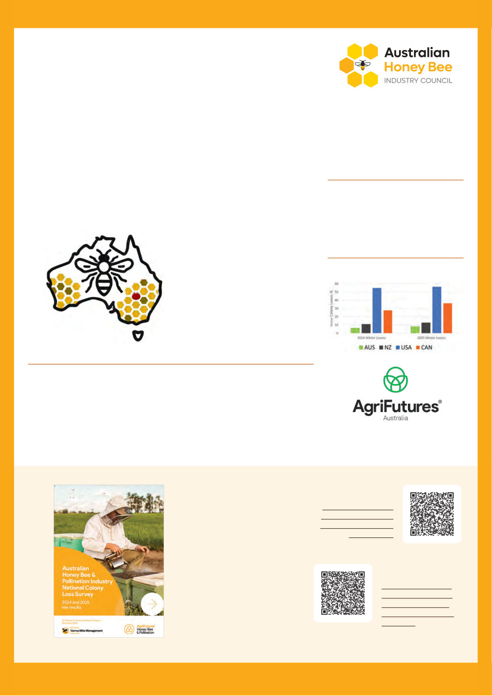

22 | Published since 1918 by the VAA – founded in 1892
INDUSTRY UPDATES FROM THE AHBIC NEWSLETTER
2026 Australian Colony Loss Survey:
opening soon!
Australian Honey Bee Industry Council
The 2026 Australian Colony Loss Survey is back!
The Australian Colony Loss Survey established in 2025, provides empirical
data to support Australian beekeepers to make informed business decisions,
particularly regarding the management of honey bee pests and diseases. The
results of the survey are used to facilitate national extension efforts and peer-
to-peer learning and knowledge transfer from beekeeper to beekeeper. The
survey provides a baseline for colony health and management practices, allowing
beekeepers to benchmark their own operations and help them to adopt best
practice management.
Through fit for purpose extension
materials, and clarity in messaging for
specific target audiences (e.g. commercial
beekeepers), this project will demonstrate
what
impact
pests,
diseases
and
management practices are having on hive
health, and what mitigation techniques are
working for beekeepers.
Over 750 beekeepers from across
Australia took part in the 2025 Survey,
giving us vital information about the
most
important
current
issues
in
Australian beekeeping. In this 2026 round,
we’re hoping to hear from even more
beekeepers!
The Survey is your chance to tell the industry, government and researchers about the
biggest challenges you faced as a beekeeper in 2026. Together, we can work out management
strategies for them that will ensure a vibrant Australian honey bee industry for the future.
The survey is for anyone and everyone who keeps bees anywhere in Australia and is
completely anonymous.
The Project will be led by Bianca Giggins from the Australian Honey Bee industry
Council, and the team will build on previous surveys to further refine the questions to
provide invaluable longitudinal data allowing industry and researchers to track and identify
emerging threats and trends.
73%
are performing
alcohol/detergent washing
to monitor mites. (2025 Results)
30%
are relying
on visual inspections of
adult bees. (2025 Results)
Register your
interest here:
Last years results
are here:
International Winter Loss Comparison
AHBIC will bring
more details in
the coming weeks
as we are busy
preparing for the
2026 launch!